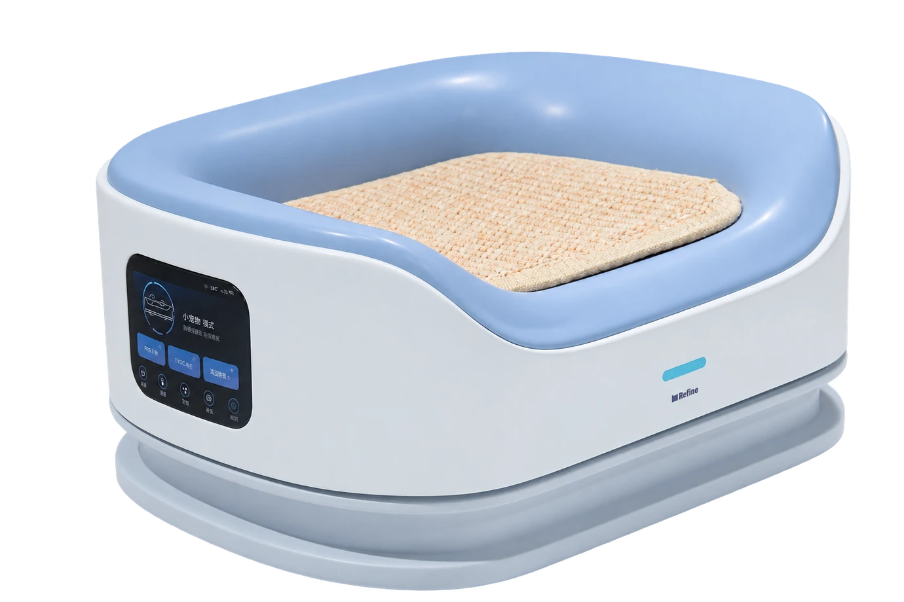
- 项目性质
- 团队参赛概念设计
- 产品尺寸（展板标注）
- 600 × 473 × 286 mm
结构与样机
Form & construction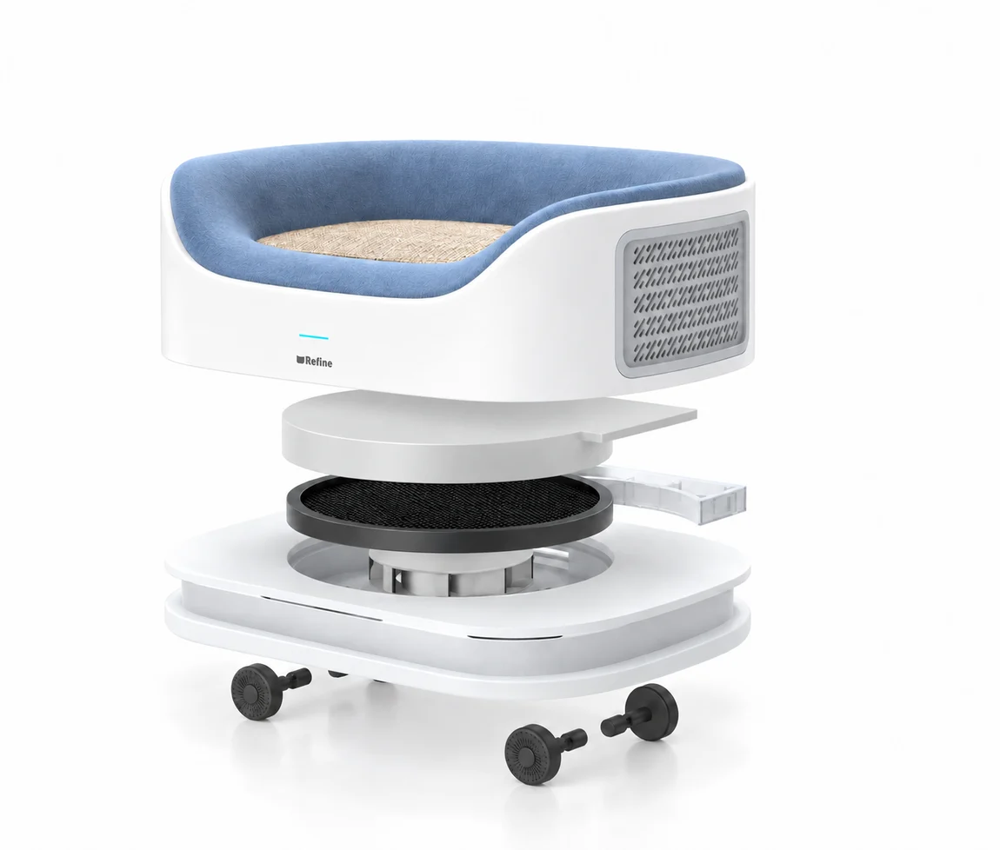
上面休憩，
下面净化。
围垫与猫抓垫构成接触面。往下看，壳体、圆形复合滤网、风机和底座依次排开；侧面留给通风格栅和触控屏。
- 接触面
- 弧形软垫 · 织物猫抓垫
- 净化层
- 复合滤网 · 净化风机
- 维护与移动
- 后部抽拉框 · 底部轮组
对照初赛结构稿
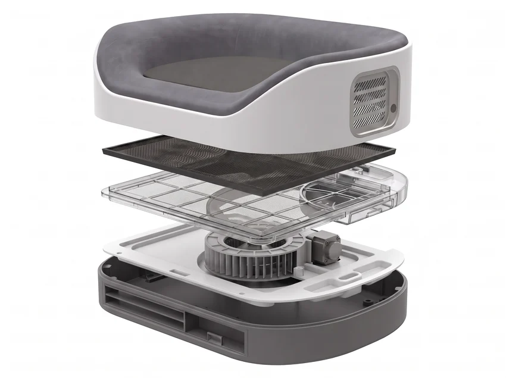
初赛图里的方形层板与新版的圆形滤网，呈现了两轮不同的内部分层方案。
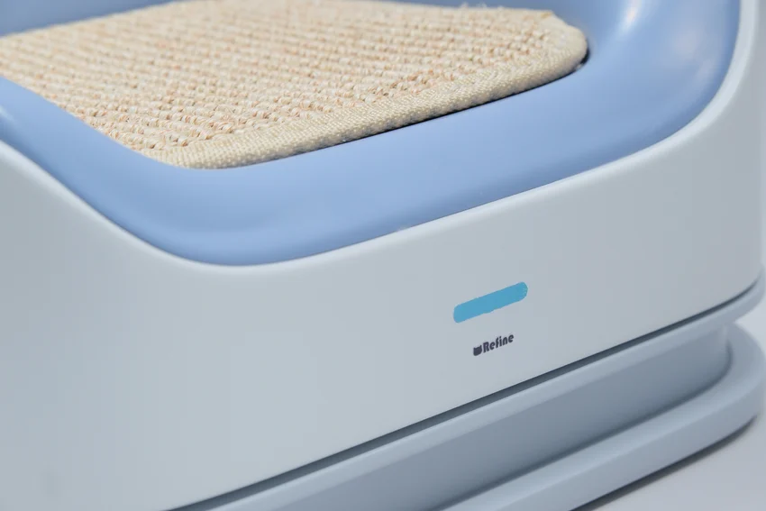
从打印机身到定制猫抓板
我们用白色聚合树脂打印猫窝样机，另外订购了两块定制猫抓板，放在上方作为猫的休憩和抓挠面。照片里可以看到，浅色抓板嵌在蓝色围边内。
参赛方案为围垫提出了织物面套与柔性 PU 海绵；上图展示实际样机的装配外观。
绕样机看一圈
新版打印模型 · 摄影实拍

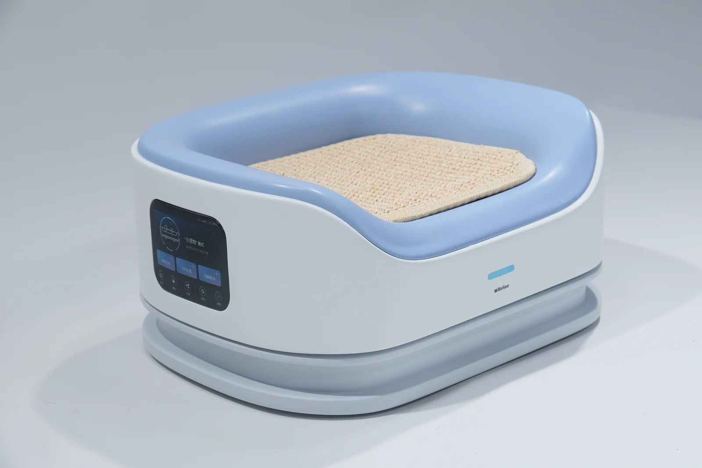

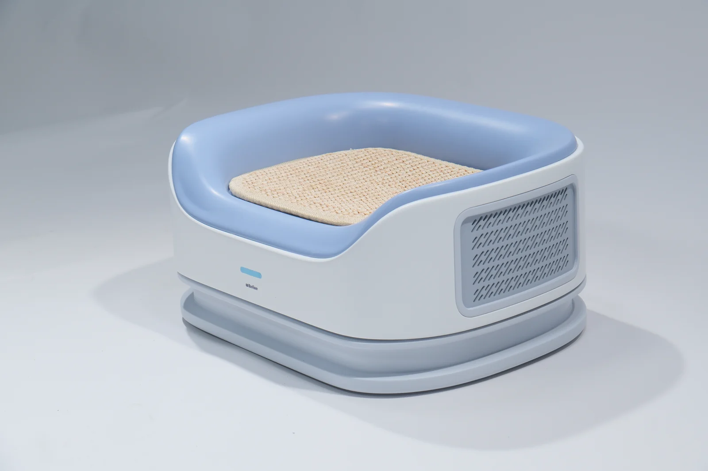

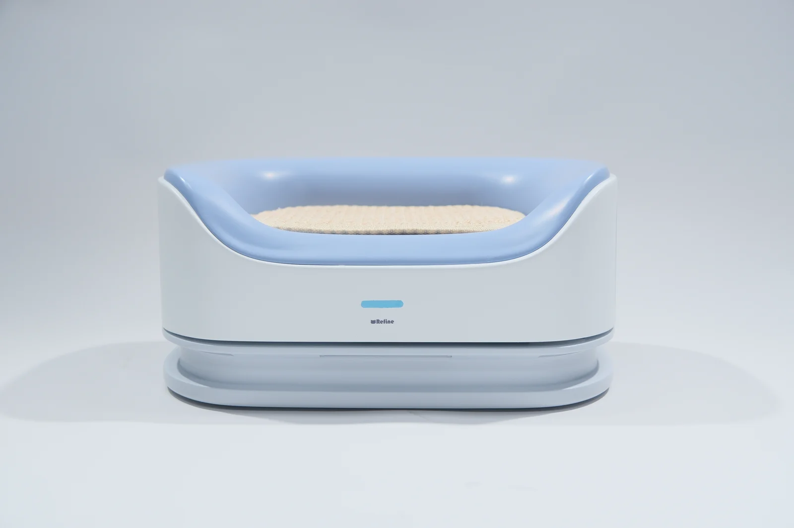

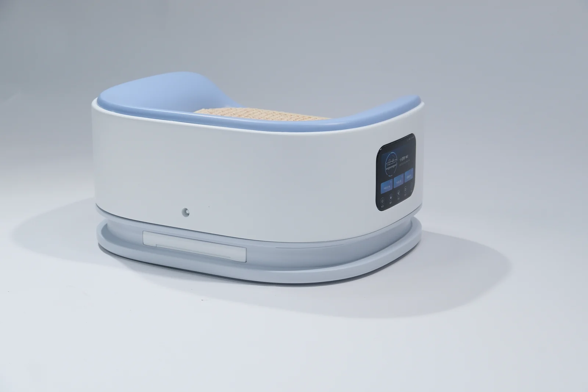
设备与手机
Interface studies在窝边调节，
在手机上回看。
在界面方案中，使用者可以从侧屏底部调节风速。手机承担另一类任务：看空气随时间的变化，或在需要时查看滤网寿命。
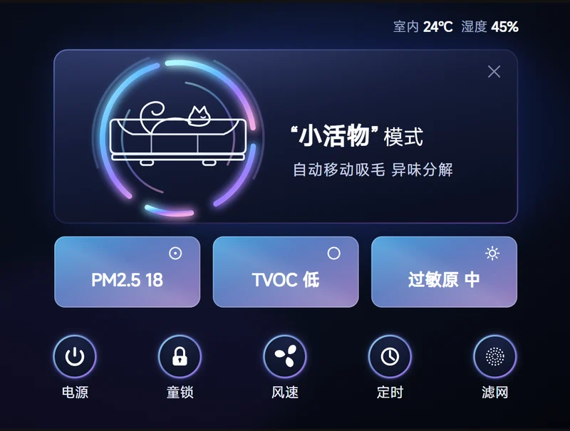
手机界面演进


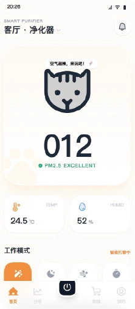

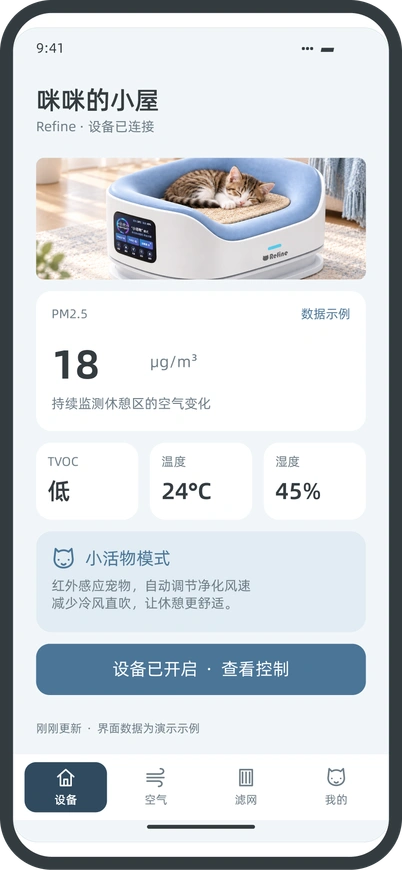


手机 App / 滤网
让维护有一个固定入口
初赛稿用橙色圆环提示滤网寿命。新版延续寿命提示，并配上设备图，让维护信息和具体猫窝对应。

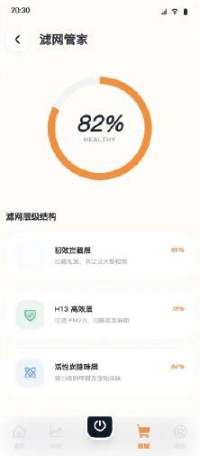

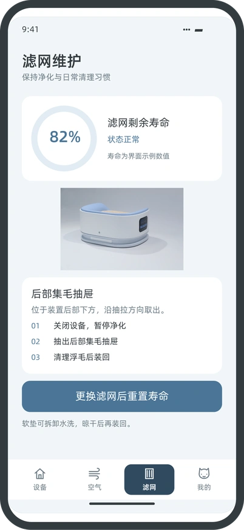


场景与展板
In context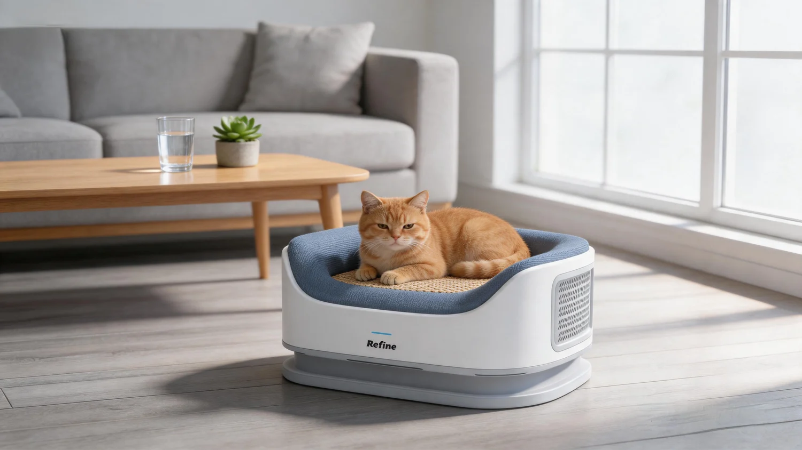